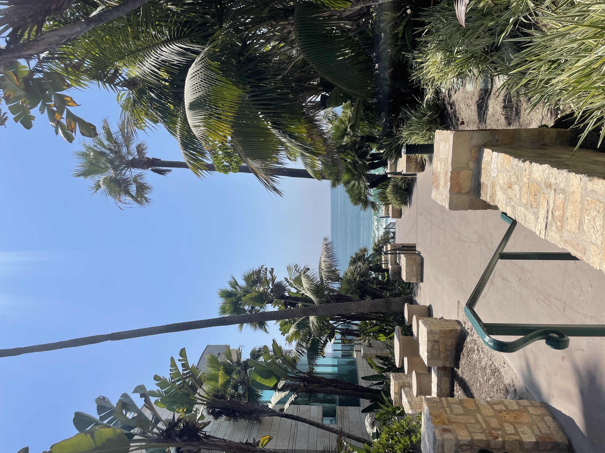
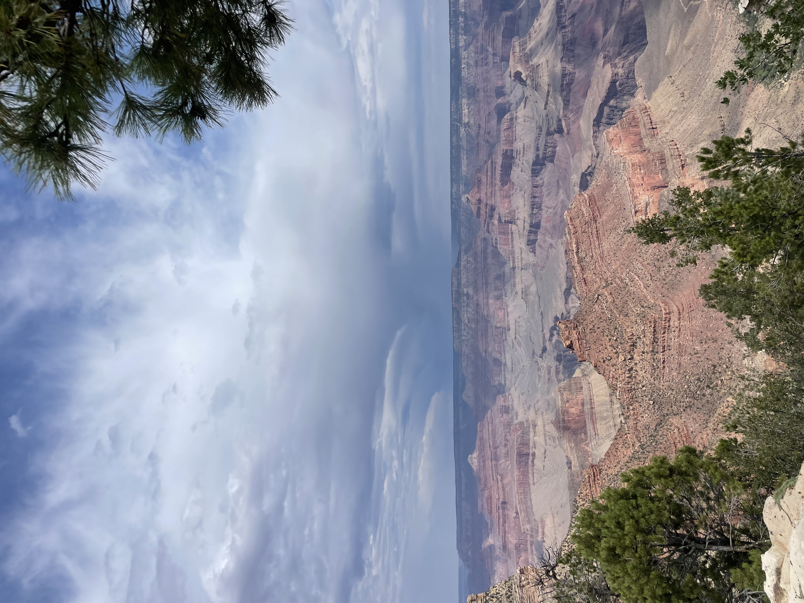
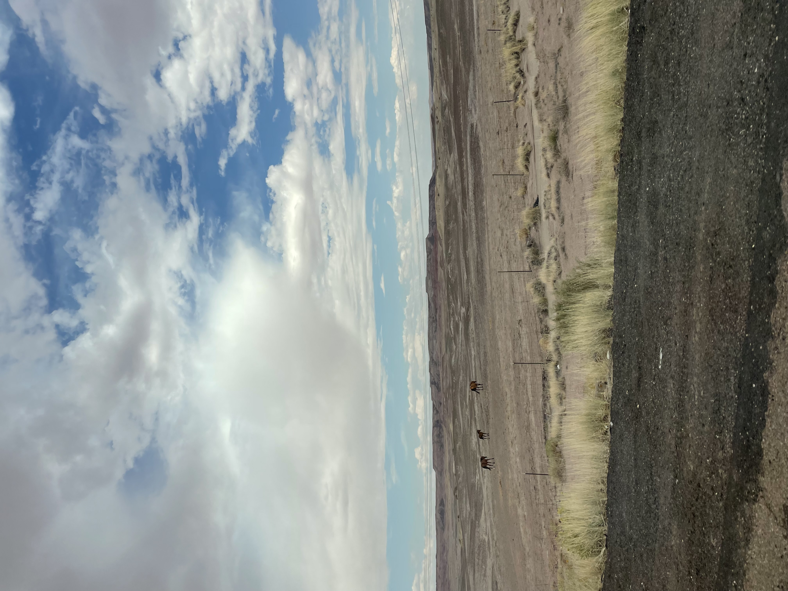
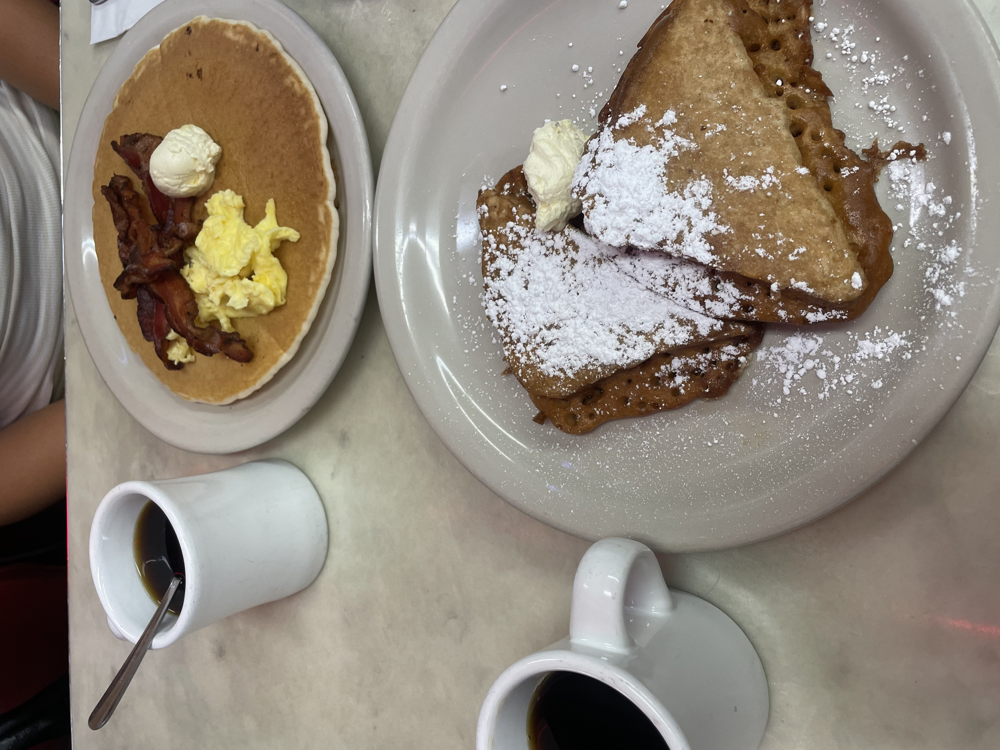
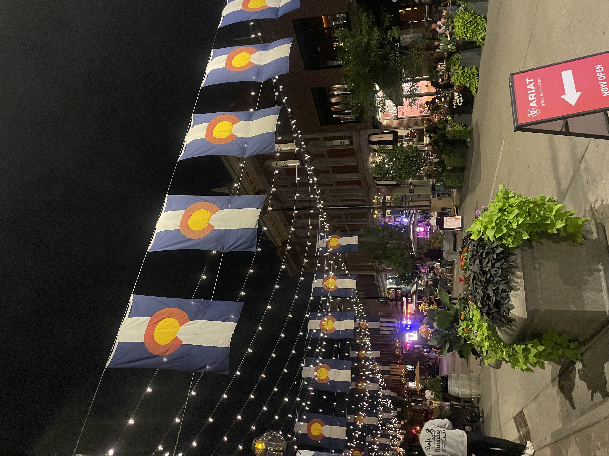

In California we went to La Jolla to see seals and coves. We also went to Strands beach to catch some rays!



In Arizona we made out first stop at In and Out to get some food. We stayed at a hotel on Route 66. There we walked around the shops, played some darts, and hung out aroiund the town at night. Then we went to the gradn canyon, where we walked around the rim and went into some shops.




Then we drove through Colorado, which was one of the prettiest and scariest drives. We got amazing breakfast and explored the towns of Durango and Denver.